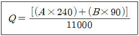

가스기능사 (2013-01-27 기출문제)
1과목: 가스안전관리
1. 도시가스 사용시설에서 배관의 호칭지름이 25㎜인 배관은 몇 m 간격으로 고정하여야 하는가?
- 1m 마다
- 2m 마다
- 3m 마다
- 4m 마다
(정답률: 86%)

2. 다음은 도시가스사용시설의 월사용예정량을 산출하는 식이다. 이중 기호 “A”가 의미하는 것은?

- 월사용예정량
- 산업용으로 사용하는 연소기의 명판에 기재된 가스 소비량의 합계
- 산업용이 아닌 연소기의 명판에 기재된 가스소비량의 합계
- 가정용 연소기의 가스소비량 합계
(정답률: 81%)
3. 도시가스사용시설의 가스계량기 설치기준에 대한 설명으로 옳은 것은?
- 시설 안에서 사용하는 자체 화기를 제외한 화기와 가스계량기와 유지하여야 하는 거리는 3m 이상 이어야 한다.
- 시설 안에서 사용하는 자체 화기를 제외한 화기와 입상관과 유지하여야 하는 거리는 3m 이상 이어야 한다.
- 가스계량기와 단열조치를 하지 아니한 굴뚝과의 거리는 10cm 이상 유지하여야 한다.
- 가스계량기와 전기개폐기와의 거리는 60cm 이상 유지하여야한다.
(정답률: 83%)
4. 도시가스도매사업자가 제조소에 다음 시설을 설치하고자한다. 다음 중 내진 설계를 하지 않아도 되는 시설은?
- 저장능력이 2톤인 지상식 액화천연가스 저장탱크의 지지구조물
- 저장능력이 300m3인 천연가스 저장탱크의 지지구조물
- 처리능력이 10m3인 압축기의 지지구조물
- 처리능력이 15m3인 펌프의 지지구조물
(정답률: 57%)
5. 액화석유가스는 공기 중의 혼합비율의 용량이 얼마인 상태에서 감지할 수 있도록 냄새가 나는 물질을 섞어 용기에 충전하여야 하는가?
- 1/10
- 1/100
- 1/1000
- 1/10000
(정답률: 88%)
6. 산소가스 설비의 수리를 위한 저장탱크 내의 산소를 치환 할 때 산소측정기 등으로 치환 결과를 수시로 측정하여 산소의 농도가 원칙적으로 몇 % 이하가 될 때까지 치환하여야 하는가?
- 18%
- 20%
- 22%
- 24%
(정답률: 76%)
7. 용기 밸브 그랜드너트의 6각 모서리에 V형의 홈을 낸 것은 무엇을 표시하기 위한 것인가?
- 왼나사임을 표시
- 오른나사임을 표시
- 암나사임을 표시
- 수나사임을 표시
(정답률: 82%)
8. LP 가스의 일반적인 성질에 대한 설명 중 옳은 것은?
- 공기보다 무거워 바닥에 고인다.
- 액의 체적팽창율이 적다.
- 증발잠열이 적다.
- 기화 및 액화가 어렵다.
(정답률: 74%)
9. 액화석유가스 또는 도시가스용으로 사용되는 가스용 염화비닐호스는 그 호스의 안전성, 편리성 및 호환성을 확보하기 위하여 안지름 치수를 규정하고 있는데 그 치수에 해당하지 않는 것은?
- 4.8㎜
- 6.3㎜
- 9.5㎜
- 12.7㎜
(정답률: 68%)
10. 내용적이 300L 인 용기에 액화암모니아를 저장하려고 한다. 이 저장설비의 저장능력은 얼마인가? (단, 액화암모니아의 충전정수는 1.86이다.)
- 161Kg
- 232Kg
- 279Kg
- 558Kg
(정답률: 72%)
11. 다음 중 마찰, 타격 등으로 격렬히 폭발하는 예민한 폭발물질로써 가장 거리가 먼 것은?
- AgN2
- H2S
- Ag2C2
- N4S4
(정답률: 65%)
12. 최근 시내버스 및 청소차량 연료로 사용되는 CNC 충전소 설계 시 고려하여야 할 사항으로 틀린 것은?
- 압축장치와 충전설비 사이에는 방화벽을 설치한다.
- 충전기에는 90kgf 미만의 힘에서 분리되는 긴급분리 장치를 설치한다.
- 자동차 충전기(디스펜서)의 충전호스 길이는 8m이하로 한다.
- 펌프 주변에는 1개 이상 가스누출검지경보장치를 설치한다.
(정답률: 64%)
13. 가스 중 음속보다 화염전파 속도가 큰 경우 충격파가 발생하는데 이 때 가스의 연소 속도로써 옳은 것은?
- 0.3 ~ 100 m/s
- 100 ~ 300 m/s
- 700 ~ 800 m/s
- 1000 ~ 3500 m/s
(정답률: 84%)
14. 고압가스용 용접용기 동판의 최대 두께와 최소 두께와의 차이는?(2013년 06월 개정된 기준 적용됨)
- 평균두께의 5% 이하
- 평균두께의 10% 이하
- 평균두께의 20% 이하
- 평균두께의 25% 이하
(정답률: 75%)
15. 용기의 내용적 40L 에 내압 시험 압력의 수압을 걸었더니 내용적이 40.24L로 증가하였고, 압력을 제거하여 대기압으로 하였더니 용적은 40.02L가 되었다. 이 용기의 항구 증가량과 또 이 용기의 내압시험에 대한 합격여부는?
- 1.6%, 합격
- 1.6%, 불합격
- 8.3%, 합격
- 8.3%, 불합격
(정답률: 61%)
16. 가연성 고압가스 제조소에서 다음 중 착화원인이 될 수 없는 것은?
- 정전기
- 베릴륨 합금제 공구에 의한 타격
- 사용 촉매의 접촉
- 밸브의 급격한 조작
(정답률: 79%)
17. 부탄가스용 연소기의 명판에 기재할 사항이 아닌 것은?
- 연소기명
- 제조자의 형식호칭
- 연소기 재질
- 제조(로트)번호
(정답률: 70%)
18. LPG용 압력조정기 중 1단 감압식 저압조정기의 조정압력의 범위는?
- 2.3~3.3kpa
- 2.55~3.3kpa
- 57~83kpa
- 5.0~30kpa 이내에서 제조사가 설정한 기준압력의 ±20%
(정답률: 72%)
19. 공기 중에서 폭발 범위가 가장 넓은 가스는?
- 메탄
- 프로판
- 에탄
- 일산화탄소
(정답률: 72%)
20. 다음 중 방류둑을 설치하여야 할 기준으로 옳지 않은 것은?
- 저장능력이 5톤 이상 인 독성가스 저장탱크
- 저장능력이 300톤 이상 인 가연성가스 저장탱크
- 저장능력이 1000톤 이상 인 액화석유가스 저장탱크
- 저장능력이 1000톤 이상 인 액화산소 저장탱크
(정답률: 54%)
21. 다음 중 지연성 가스에 해당되지 않는 것은?
- 염소
- 불소
- 이산화질소
- 이황화탄소
(정답률: 56%)
22. 액화석유가스를 탱크로리로부터 이ꠑ 충전할 때 정전기를 제거하는 조치로 접지하는 접지접속의 규격은?
- 5.5mm2 이상
- 6.7mm2 이상
- 9.6mm2 이상
- 10.5mm2 이상
(정답률: 65%)
23. 가연성가스, 독성가스 및 산소설비의 수리 시 설비 내의 가스 치환용으로 주로 사용되는 가스는?
- 질소
- 수소
- 일산화탄소
- 염소
(정답률: 82%)
24. 가스누출 자동차단장치의 검지부 설치금지 장소에 해당하지 않는 것은?
- 출입구 부근 등으로서 외부의 기류가 통하는 곳
- 가스가 체류하기 좋은 곳
- 환기구 등 공기가 들어오는 곳으로부터 1.5m 이내의 곳
- 연소기의 폐가스에 접촉하기 쉬운 곳
(정답률: 59%)
25. 도시가스계량기와 화기 사이에 유지하여야 하는 거리는?
- 2m 이상
- 4m 이상
- 5m 이상
- 8m 이상
(정답률: 70%)
26. 건축물 안에 매설할 수 없는 도시가스 배관의 재료는?
- 스테인리스강관
- 동관
- 가스용 금속플렉시블호스
- 가스용 탄소강관
(정답률: 61%)
27. 저장탱크의 지하설치기준에 대한 설명으로 틀린 것은?
- 천정, 벽 및 바닥의 두께가 각각 30cm 이상 인 방수 조치를 한 철근콘크리트로 만든 곳에 설치한다.
- 지면으로부터 저장탱크의 정상부까지의 깊이는 1m 이상으로 한다.
- 저장탱크에 설치한 안전밸브에는 지면에서 5m 이상 의 높이에 방출구가 있는 가스 방출구가 있는 가스방출관을 설치한다.
- 저장탱크를 매설한 곳의 주위에는 지상에 경계표지를 설치한다.
(정답률: 72%)
28. 다음 중 천연가스(LNG)의 주성분은?
- CO
- CH4
- C2H4
- C2H2
(정답률: 88%)
29. 독성가스 용기 운반기준에 대한 설명으로 틀린 것은?
- 차량의 최대 적재량을 초과하여 적재하지 아니한다.
- 충전용기는 자전거나 오토바이에 적재하여 운반하지 아니한다.
- 독성가스 중 가연성가스와 조연성가스는 같은 차량의 적재함으로 운반하지 아니한다.
- 충전용기를 차량에 적재하여 운반할 때에는 적재함에 넘어지지 않게 뉘어서 운반한다.
(정답률: 92%)
30. 비등액체팽창증기폭발(BLEVE)이 일어날 가능성이 가장 낮은 곳은?
- LPG 저장탱크
- 액화가스 탱크로리
- 천연가스 지구정압기
- LNG 저장탱크
(정답률: 83%)
2과목: 가스장치 및 기기
31. 주로 탄광 내에서 CH4의 발생을 검출하는데 사용되며 청염(푸른 불꽃)의 길이로써 그 농도를 알 수 있는 가스 검지기는?
- 안전등형
- 간섭계형
- 열선형
- 흡광 광도형
(정답률: 81%)
32. 다음 중 저온을 얻는 기본적인 원리는?
- 등압 팽창
- 단열 팽창
- 등온 팽창
- 등적 팽창
(정답률: 77%)
33. 다음 중 용적식 유량계에 해당하는 것은?
- 오리피스 유량계
- 플로노즐 유량계
- 벤투리관 유량계
- 오벌 기어식 유량계
(정답률: 59%)
34. 전위측정기로 관대지전위(pipe to soil potential) 측정 시 측정방법으로 적합하지 않는 것은? (단, 기준전극은 포화황사동전극이다.)
- 측정선 말단의 부삭부분을 연마 후에 측정한다.
- 전위측정기의(＋)는 T/B(EST Box), (-)는 기준전극에 연결한다.
- 콘크리트 등으로 기준전극을 토양에 접지할 수 없을 경우에는 물에 적신 스폰지 등을 사용하여 측정한다.
- 전위측정은 가능한 한 배관에서 먼 위치에서 측정한다.
(정답률: 77%)
35. 다이어프램식 압력계의 특징에 대한 설명 중 틀린 것은?
- 정확성이 높다.
- 반응속도가 빠르다.
- 온도에 따른 영향이 적다.
- 미소압력을 측정할 때 유리하다.
(정답률: 75%)
36. 염화메탄을 사용하는 배관에 사용하지 못하는 금속은?
- 주강
- 강
- 동합금
- 알루미늄 합금
(정답률: 65%)
37. 송수량 12000L/min, 전양정 45m인 볼류트 펌프의 회전수를 1000rpm에서 1100rpm으로 변화시킨 경우 펌프의 축동력은 약 몇 PS 인가? (단, 펌프의 효율은 80%)
- 165
- 180
- 200
- 250
(정답률: 39%)
38. 염화파라듐지로 검지할 수 있는 가스는?
- 아세틸렌
- 황화수소
- 염소
- 일산화탄소
(정답률: 43%)
39. 압축기를 이용한 LP가스 이, 충전 작업에 대한 설명으로 옳은 것은?
- 충전시간이 길다.
- 잔류가스를 회수하기 어렵다.
- 베이퍼록 현상이 일어난다.
- 드레인 현상이 일어난다.
(정답률: 64%)
40. 펌프의 실제 송출유량을 Q, 펌프 내부에서의 누설 유량을 ΔQ, 임펠러 속을 지나는 유량을 Q＋ΔQ할 때 펌프의 체적효율 (ηv)를 구하는 식은?
- ηv = Q / (Q＋ΔQ)
- ηv = (Q＋ΔQ) / Q
- ηv = (Q-ΔQ) / (Q＋ΔQ)
- ηv = (Q＋ΔQ) / (Q-ΔQ)
(정답률: 59%)
41. 저온장치의 분말진공단열법에서 충진용 분말로 사용되지 않는 것은?
- 펄라이트
- 알루미늄분말
- 글라스울
- 규조토
(정답률: 63%)
42. 어떤 도시가스의 발열량이 15000Kcal/Sm3일 때 웨버지수는 얼마인가? (단, 가스의 비중은 0.5로 한다.)
- 12121
- 20000
- 21213
- 30000
(정답률: 75%)
43. 진탄형 오토클레브의 특징에 대한 설명으로 틀린 것은?
- 가스누출의 가능성이 적다.
- 고압력에 사용할 수 있고 반응물의 오손이 적다.
- 장치 전체가 진동하므로 압력계는 본체로부터 떨어져 설치한다.
- 뚜껑판에 뚫어진 구멍에 촉매가 끼어들어갈 염려가 없다.
(정답률: 76%)
44. 고압가스용기의 관리에 대한 설명으로 틀린 것은?
- 충전 용기는 항상 40℃ 이하를 유지하도록 한다.
- 충전 용기는 넘어짐 등으로 인한 충격을 방지하는 조치를 하여야 하며 사용한 후에는 밸브를 열어둔다.
- 충전용기 밸브는 서서히 개폐한다.
- 충전 용기 밸브 또는 배관을 가열하는 때에는 열습포나 40℃ 이하의 더운물을 사용한다.
(정답률: 90%)
45. 가스난방기의 명판에 기재하지 않아도 되는 것은?
- 제조자의 형식호칭(모델번호)
- 제조자명이나 그 약호
- 품질보증기간과 용도
- 열효율
(정답률: 66%)
3과목: 가스일반
46. LNG의 특징에 대한 설명 중 틀린 것은?
- 냉열을 이용할 수 있다.
- 천연에서 산출한 천연가스를 약 –162℃까지 냉각하여 액화시킨 것이다.
- LNG는 도시가스, 발전용 이외에 일반 공업용으로도 사용된다.
- LNG로부터 기화한 가스는 부탄이 주성분이다.
(정답률: 86%)
47. 완전연소 시 공기량이 가장 많이 필요로 하는 가스는?
- 아세틸렌
- 메탄
- 프로판
- 부탄
(정답률: 65%)
48. 가정용 가스보일러에서 발생하는 가스중독사고 원인으로 배기가스의 어떤 성분에 의하여 주로 발생하는가?
- CH4
- CO2
- CO
- C3H8
(정답률: 80%)
49. 다음 중 LP 가스의 일반적인 연소특성이 아닌 것은?
- 연소 시 다량의 공기가 필요하다.
- 발열량이 크다.
- 연소속도가 늦다.
- 착화온도가 낮다.
(정답률: 47%)
50. 다음 중 가장 높은 압력은?
- 1atm
- 100kPa
- 10mH2O
- 0.2MPa
(정답률: 58%)
51. 100°F를 섭씨온도로 환산하면 약 몇 ℃ 인가?
- 20.8
- 27.8
- 37.8
- 50.8
(정답률: 73%)
52. 에틸렌(C2H4)의 용도가 아닌 것은?
- 폴리에틸렌의 제조
- 산화에틸렌의 원료
- 초산비닐의 제조
- 메탄올 합성의 원료
(정답률: 61%)
53. 공기 중에 10vol% 존재 시 폭발의 위험성이 없는 가스는?
- CH3Br
- C2H6
- C2H4O
- H2S
(정답률: 65%)
54. 산소의 물리적 성질에 대한 설명 중 틀린 것은?
- 물에 녹지 않으며 액화산소는 담녹색이다.
- 기체, 액체, 고체 모두 자성이 있다.
- 무색, 무취, 무미의 기체이다.
- 강력한 조연성가스로서 자신은 연소하지 않는다.
(정답률: 71%)
55. 공기 100kg 중에는 산소가 약 몇 Kg 포함되어 있는가?
- 12.3Kg
- 23.2Kg
- 31.5Kg
- 43.7Kg
(정답률: 77%)
56. 다음 중 상온에서 비교적 낮은 압력으로 가장 쉽게 액화되는 가스는?
- CH4
- C3H8
- O2
- H2
(정답률: 47%)
57. 다음 중 비점이 가장 낮은 것은?
- 수소
- 헬륨
- 산소
- 네온
(정답률: 61%)
58. 물질이 융해, 응고, 증발, 응축 등과 같은 상의 변화를 일으킬 때 발생 또는 흡수하는 열을 무엇이라 하는가?
- 비열
- 현열
- 잠열
- 반응열식
(정답률: 75%)
59. 0℃, 2기압 하에서 1L의 산소와 0℃, 3기압 2L의 질소를 혼합하여 2L로 하면 압력은 몇 기압이 되는가?
- 2기압
- 4기압
- 6기압
- 8기압
(정답률: 61%)
60. 순수한 물 1g을 온도 14.5℃에서 15.5℃ 까지 높이는데 필요한 열량을 의미하는 것은?
- 1 cal
- 1 BTU
- 1 J
- 1 CHU
(정답률: 82%)